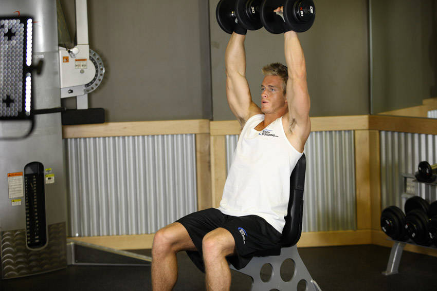

- Sit on an exercise bench with back support and hold two dumbbells in front of you at about upper chest level with your palms facing your body and your elbows bent. Tip: Your arms should be next to your torso. The starting position should look like the contracted portion of a dumbbell curl.
- Now to perform the movement, raise the dumbbells as you rotate the palms of your hands until they are facing forward.
- Continue lifting the dumbbells until your arms are extended above you in straight arm position. Breathe out as you perform this portion of the movement.
- After a second pause at the top, begin to lower the dumbbells to the original position by rotating the palms of your hands towards you. Tip: The left arm will be rotated in a counter clockwise manner while the right one will be rotated clockwise. Breathe in as you perform this portion of the movement.
- Repeat for the recommended amount of repetitions.
This exercise appears in Programmd training programs. Take the quiz to find one for your gym.
Find your program